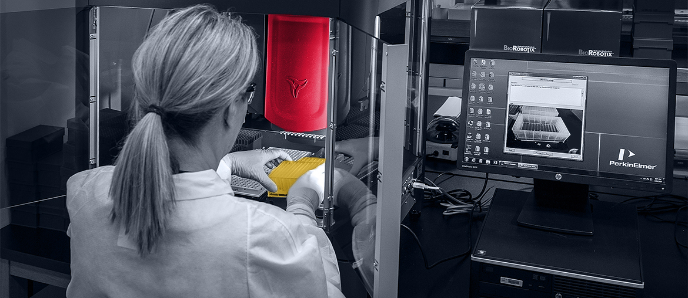

Quality Assurance for Clinical Trials Software
Elinext supported a healthcare SaaS platform for clinical trial document work, including CFR-ready virtual data room needs.
Read the case studyProposal for ProKidney Biometrics
ProKidney is moving rilparencel through a high-stakes clinical path. Elinext can support the engineering work around clinical data, validation, and reporting.
Why we're here: we saw the Statistical Programmer Contractor role. That need often means the team needs cleaner data flows, stronger checks, and ready documentation.
The contractor role says ProKidney is adding statistical programming capacity for Phase 3 work. The hard part is not only SAS output. It is the data path that feeds SDTM, ADaM, tables, listings, and figures. If checks stay manual, the Biometrics team loses time to rework. That can slow reviews near key trial milestones.
We would place a small squad under ProKidney's Biometrics lead or PM. The goal is to support, not replace, clinical SMEs.
Review CRF, SDTM, ADaM, and TLF handoffs to find repeated manual checks and weak trace links.
Build Python and QA scripts for data completeness, mapping rules, output drift, and issue lists.
Create clear validation logs and reviewer notes that keep programming outputs audit- and inspection-ready for review cycles.
Ship each improvement in a six-week pilot with weekly demos to Biometrics and study leads.
Elinext is a full-cycle software development company founded in 1997, with about 700 in-house specialists and no freelancers. For ProKidney, the useful fit is regulated data work, QA, Python, .NET, and long-running dedicated teams. Elinext holds ISO 9001 and ISO 27001 certifications. Our named customers include Siemens, Broadcom, Volkswagen, TRUMPF, and TUI. The same model gives your team senior capacity without adding recruiting load. That experience fits a small squad that can help Biometrics make clinical data work more repeatable.
Elinext supported a healthcare SaaS platform for clinical trial document work, including CFR-ready virtual data room needs.
Read the case study
Elinext refactored healthcare lab software with compliance needs, lab modules, cloud functions, and secure data handling.
Read the case study